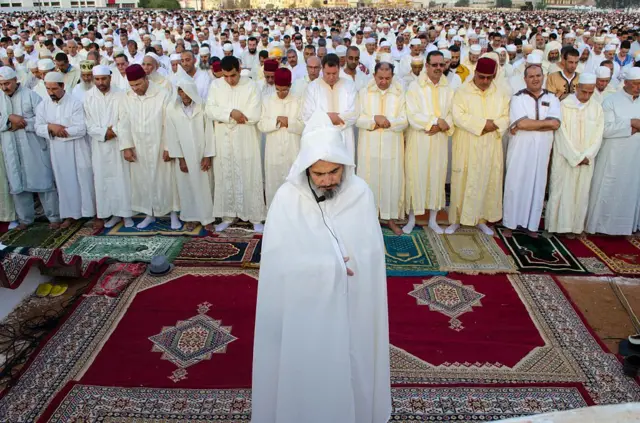
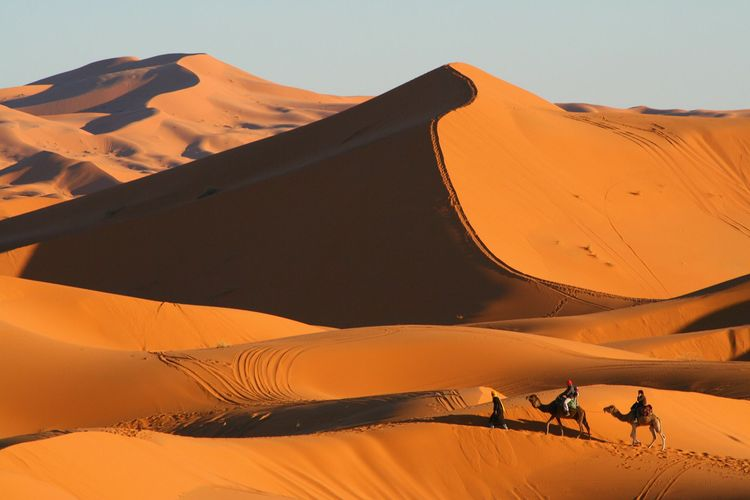
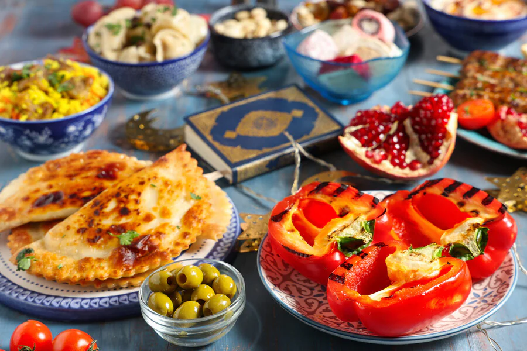
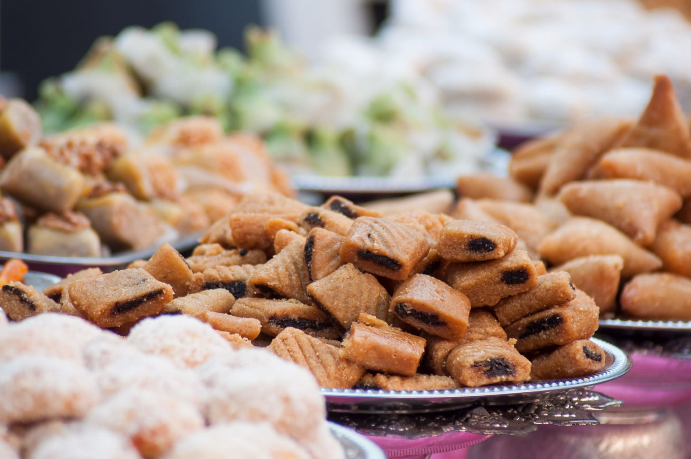
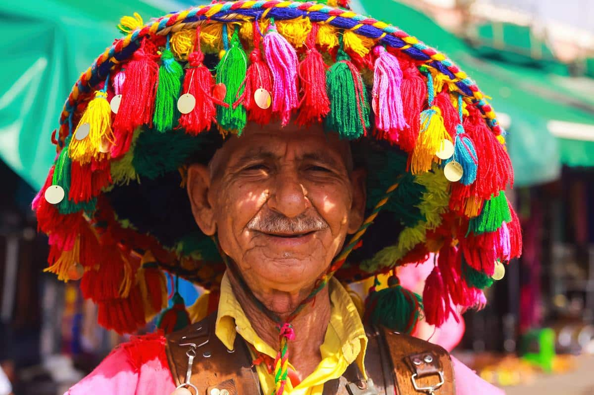
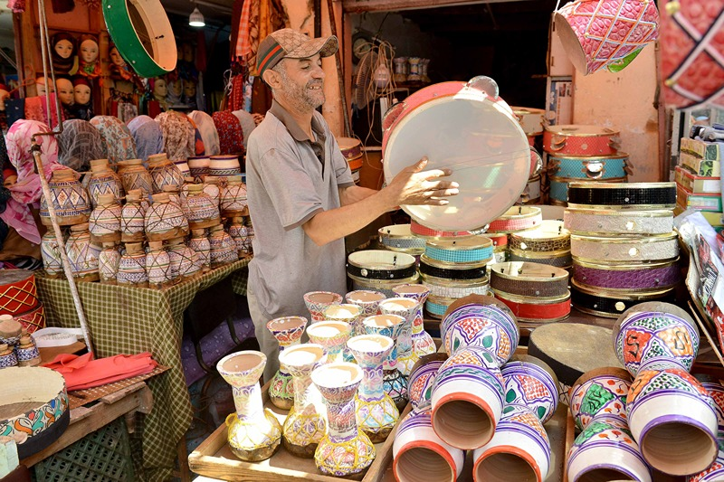
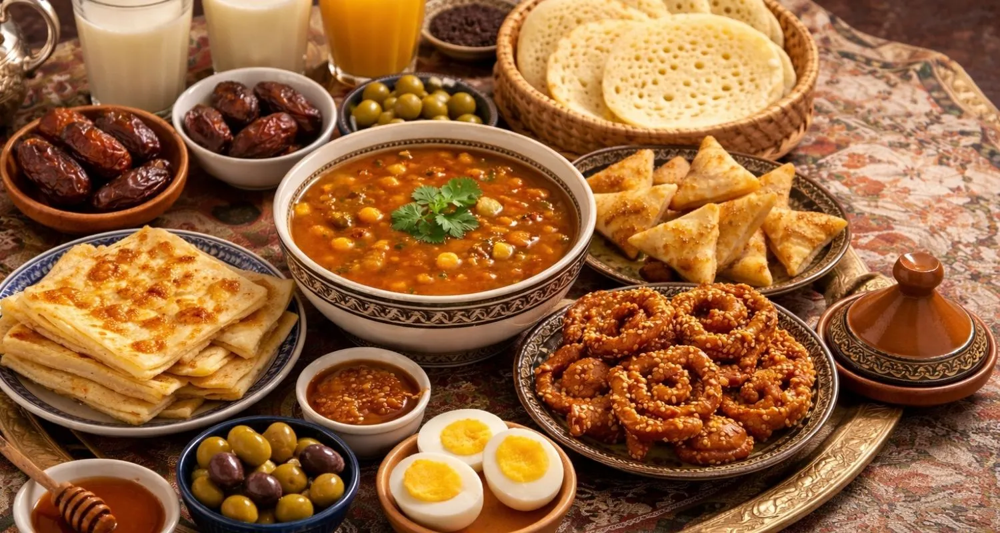
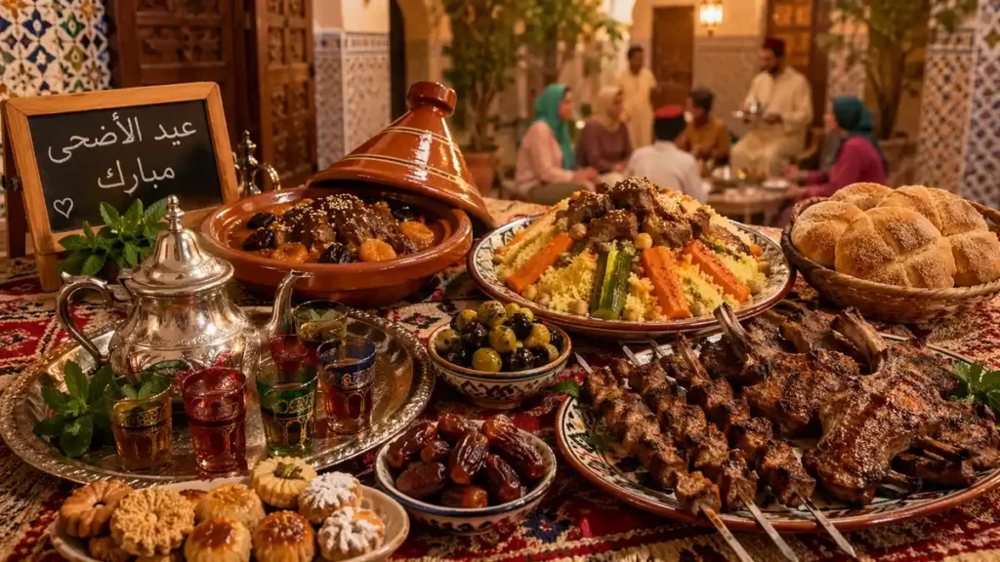
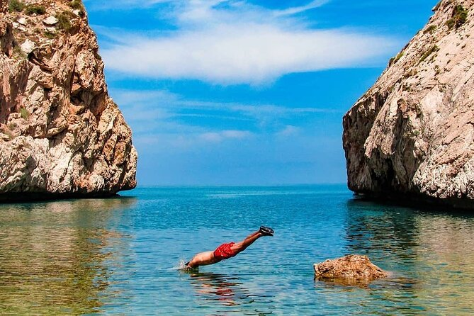
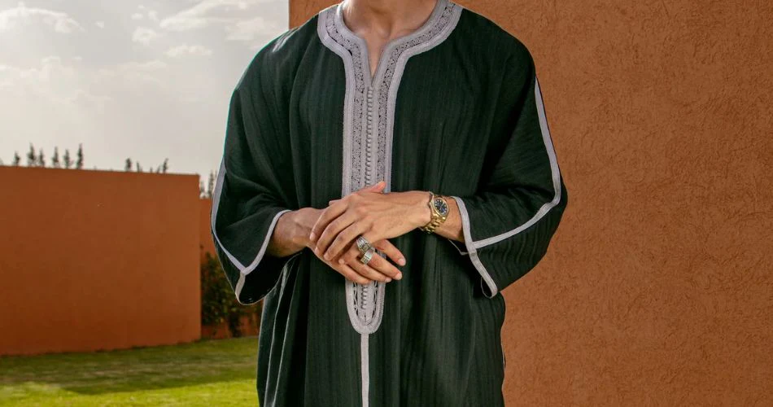

Royaume du Maroc · Portail Officiel du Tourisme
Bienvenue au Royaume de Lumière
Mille ans d'histoire · Mille couleurs · Un seul Royaume
Explorer les destinationsMille ans d'histoire · Mille couleurs · Un seul Royaume
Explorer les destinations10 Destinations · 1 Royaume
10 villes d'exception — Cliquez pour explorer chaque destination
La Ville Rouge · Perle du Sud
Découvrir →Lagune Bleue · Capitale du Kitesurf
Découvrir →
La Perle Bleue du Rif
Découvrir →
Porte du Sahara · Erg Chebbi
Découvrir →Capitale Mondiale de la Céramique
Découvrir →
Baie du Soleil · Riviera Marocaine
Découvrir →
Capitale du Royaume · Ville Lumière
Découvrir →Mogador · Joyau de l'Atlantique
Découvrir →
Capitale Spirituelle · Médina UNESCO
Découvrir →
Aït Benhaddou · Porte du Sahara · Hollywood d'Afrique
Découvrir →Le Maroc est un pays véritablement enrichi par sa culture. Ces informations et ces images sont là pour mieux vous faire connaître nos traditions. Pour découvrir chaque ville en détail, explorez les destinations ci-dessus.












La salat de l'Aïd Al-Fitr est l'une des prières les plus émouvantes du calendrier islamique marocain. Des milliers de fidèles, vêtus de leurs plus beaux habits — djellabas blanches et caftans brodés — se rassemblent dans les esplanades à l'aube pour prier ensemble. Cette image de l'unité, de la dévotion et de la gratitude collective est au cœur de l'identité marocaine.
Nous contacter
Une question sur le Maroc ? Envie de préparer votre séjour ? Notre équipe vous répond rapidement.
Tous les champs marqués * sont obligatoires.
Que vous rêviez des ruelles bleues de Chefchaouen, des dunes dorées de Merzouga ou de la Médina de Fès, nous sommes là pour vous accompagner à chaque étape de votre aventure.